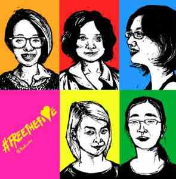
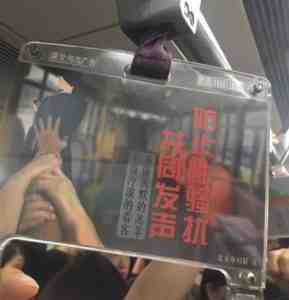

文/吕频 – 中国女权工作者
因好莱坞大佬韦恩斯坦性骚扰事件而发起的 #MeToo 标签运动，其最初目的是通过社交媒体鼓励女性说出自己遭遇性骚扰的经历。随着一连串的名人性骚扰行为被揭发，这一运动开始被称颂为年度性的女性权利胜利，事先预想不到的那种。最令人欣慰的是部份被曝光的骚扰者、导演、演员和高官，都以相当快的速度受了处分，这说明性骚扰是完全可以被处理的，但是得有一个前提，那就是女人的控诉当真被听到，被重视。
If you’ve been sexually harassed or assaulted write ‘me too’ as a reply to this tweet. pic.twitter.com/k2oeCiUf9n
— Alyssa Milano (@Alyssa_Milano) 2017年10月15日
其实#ＭeToo 运动并非源自好莱坞，早在十年前非裔美国人活动家Tarana Burke已经在提倡。 “如果我们以为一个标签甚至一个运动就能停止[性骚扰]，那是不负责任的。” 她接受访问时说：“一个时刻不是一个运动。运动需要时间慢慢建立，它是有策略，有行动，有胜利，有失败的。在整个运动的时间线里，这是胜利的一刻。
地铁广告的政治
在2017年的中国，性骚扰议题也得到凸显，尽管是以大不相同的方式。今年6月起，在北京、上海，成都和深圳，至少四个城市的地铁里相继出现反性骚扰的公益广告，然而，这不能简单归功于广告背后的商业公司和妇联的自发觉悟。

2015年3月，五名青年女权活动家，因策划反对公交性骚扰的倡议活动被刑事拘留，是为当局向中国女权运动画下警告红线的“女权五姐妹”案。那时候许多人都问，怎么连反性骚扰都不允许？2016年，一些广州女青年网上众筹经费，计划在地铁发布反性骚扰公益广告。等待一年之后，她们得到的答复是，只有政府才能发布公益广告。2017年5月，计划发起人之一张累累（昵称）在网上公开发布这一未能落地的广告设计，号召通过集体“人肉广告牌“在各地公开宣传反性骚扰。她收到了来自全国各地乃至国外的许多呼应，女生们将广告展示在各种城市地标空间，并将那些明艳的照片发布到微博，既是一种宣告，也简直像是一种女性力量的庆祝。然而这个活动也被叫停。就在张累累郁闷的时候，地铁上开始出现“合法”的反性骚扰公益广告。这说明了什么？
民意基础的建立
和 #MeToo活动一样，在中国，反性骚扰议题的凸显也不是意外，背后必然是，这一议题已经拥有广泛的民意基础，尤其是青年一代，已经再也不想默默忍受，并且渴望挑战与性骚扰配套的羞辱性的性别文化。和其他性别暴力一样，性骚扰对女性发展有长远的影响，无论发生在公共场合还是职业场所，它都导致女性的恐惧、羞耻与退缩，让她们不能享受应有的空间和机会。然而，要让社会和权力者承认性骚扰是一个问题却很难。例如，如果将性骚扰解释为女性行为不检而导致的男性欲望表达，那就既是归咎受害者，也是在否认性骚扰作为权利议题。早在“女权五姐妹“事件前，2012年6月，就地铁性骚扰是不是女人“穿得少“导致的，中国互联网出现了史上第一次女权大辩论，一些上海姑娘公开打出了“我可以骚你不能扰”的口号，要不容折扣地澄清女性的身体权利。这一辩论留下了长久的影响，即：中国青年女性反对性骚扰的态度从此变得更直言不讳，无数次的大小交锋发生在互联网上。
于是，2015年3月“女权五姐妹”那次计划的行动，可以视为一次引流——将网上的自发愤怒，转变为实地的组织化的问责，继将性骚扰明确为权利议题之后，再明确其责任者。行动的方式而不是议题本身是这一行动被打击的真正原因，然而无可避免地，反性骚扰的民间行动层面被敏感化。但另一方面，女性的愤怒并没有削弱，反而随着网上泛女权社群的扩大形成了更大的规模。这就是2015年以后中国女权的特殊形态：外围舆论比以往更广泛而激烈，核心的行动主义却不彰。这两年多以来，除了《反家庭暴力法》这一迟到的成果之外，在这一领域中基本没有其他可见的政策倡导进展，一些公众高度关注的侵权个案也没有得到应有的处理。
然而，行动主义始终在寻找机会，它必须在严苛的限制之下连接到社群并迅速形成足够规模的动员。 2017年5月反性骚扰“人肉广告牌“活动的模式与２０１５年３月“女权五姐妹”公交反性骚扰活动的模式不再相同。15年的是多个城市的行动协调，今年的是一人发起，多方自发响应，没有统一的组织 — 这种模式不仅减少了行动的负担和更灵活，而且能令行动参与扩展到更大范围。另外，它也打通了线下行动与线上呈现的结合。张累累所得到的响应，其实是女生们终于找到的出口：可以为争取自己的权利做点什么了。然而，这一行动不但被迅速终止，而且也完全没有进入任何主流传播，等同被消音。张累累随之遭遇持续的骚扰和被逼迁，这种代价与成就的巨大不相称，似乎要让女权行动主义成为绝响。
走向公共空间
然而，回响却意想不到地出现了。妇联和商业公司竟然默默接过张累累的话题，尽管它们所发布的公益广告只是泛泛表态，却是反性骚扰理念终于合法进驻中国的公共空间，是这一议题终于被纳入公共议程的初步标志。这说明一切艰难但仍有空间，但需要坚持各种尝试，甚至将每一次失落都视为蓄能的过程。只是不确定性甚高，在这个安全感已经被高度剥夺的社会中，谈权利倡导策略有些奢侈，进展可遇不可求。
第一个在中国形成声势的民间女权议题或许是家庭暴力。从上世纪９０年代开始，第一步是将“打老婆“重新定性为不可容忍的权利侵犯，继而是意识提升与法律倡导的并行。2002年发布了第一个反家庭暴力的街头公益广告，2003年第一部反家庭暴力法的民间草案递交全国人大，到2016年3月《反家庭暴力法》终于实施，倡导者们已经工作了十多甚至二十多年。对比一下就能发现，性骚扰议题真的还只是刚刚起步，其制度化的前途还完全看不清楚。
《环球时报》也女权
而且在公民社会被抹黑为“反动势力”的年头，由青年一代主导的运动，虽然自发支持者众，却缺乏多元的社会资源支持，其有力与脆弱互为表里，令人担忧其可持续性。另一方面，受政府支持的舆论势力已经开始试图接管和利用女权诉求，在2017年初，属于这一背景的《环球时报》公开提出”官方女权“的说法，意指只有政府才能解决女性的权利忧虑。这当然是冒牌父爱主义的妄言炎炎，因为常识是政府需要被监督、被问责才能有作为，中国的性别差距排名在２０１７年跌到世界第100位，就是所谓“官方女权”何为的明证。然而，这些势力，也不排除在个别女权议题，包括性骚扰议题上的时或开明做态，甚至偶尔正义凛然，其目的都是“吸粉”——诱拐有女权意识但又恐惧公民行动的青年社群转向效忠国家主义。虽然迄今这样的努力还不是很成功，但却再次显示出，女权的领域不可能再如以往那么单纯。
再回到2015年那个“怎么连反性骚扰都不允许”的疑问，答案是步步深入的女权倡导难免会触动体制。#MeToo 运动在发起后十年才火起来，和 #MeToo 运动相比，中国反性骚扰行动的环境更要险恶得多，因此最珍贵的是，她们不会放弃。